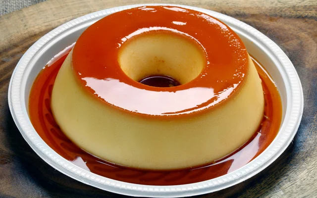

Simples, delicioso e inesquecível - exatamente como um bom pudim deve ser!
Conheça a históriaO pudim é uma sobremesa que atravessa séculos! Sua origem remonta ao Império Romano, onde era feito com carne, mas a versão doce que conhecemos hoje surgiu na Idade Média na Europa.
No Brasil, o pudim de leite condensado se popularizou na década de 1940, com a industrialização do leite condensado pela Nestlé. Desde então, tornou-se uma das sobremesas mais amadas do país!
O site pudim.com.br foi criado em 2000 e se tornou um fenômeno da internet brasileira, sendo um dos domínios mais antigos ainda no ar!

O pudim.com.br é um dos sites brasileiros mais antigos da internet, e agora ganhou uma nova!
Mesmo sendo apenas uma foto de pudim, o site já recebeu milhões de visitas ao longo dos anos.
O site já foi mencionado em programas de TV, memes e virou símbolo da simplicidade da internet.